Software Test Developer
Forcom Sp. z o.o.
Dec 2023 – Current
Remote, Poland
- Developing and maintaining automated test scripts using TestComplete, Appium and Cypress.
- Writing and optimizing JavaScript/TypeScript scripts to enhance test automation processes and improve efficiency.
- Conducting various types of testing: functional, regression, integration, as well as automated and manual testing.
- Performing REST API testing using Postman.
- Verifying SQL queries and data integrity during database testing (Oracle, PostgreSQL).
- Ensuring cross-platform compatibility by synchronizing and executing tests across desktop and mobile applications.
- Analyzing test results and reporting bugs.
- Preparing test cases and scenarios based on documentation.